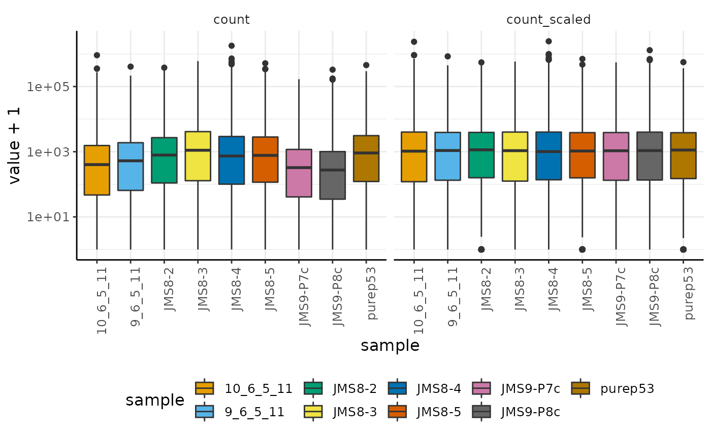

Bulk Tidy Transcriptomics - analysis of bulk RNA sequencing data with R tidy principles
Stefano Mangiola
The Walter and Eliza Hall Institute of Medical Research, 1G Royal Parade, Parkville, VIC 3052, Melbourne, Australia; Department of Medical Biology, The University of Melbourne, Parkville, VIC 3010, Melbourne, AustraliaMaria Doyle
Peter MacCallum Cancer Centre, 305 Grattan Street, Parkville, Melbourne, Victoria, Australia11 November 2020
Source:vignettes/tidy_limmaWorkflow.Rmd
tidy_limmaWorkflow.Rmd
Abstract
This is the tidy version of the material in the session RNA-seq analysis is easy as 1-2-3 with limma, Glimma and edgeR of this workshop
Introduction
Measuring gene expression on a genome-wide scale has become common practice over the last two decades or so, with microarrays predominantly used pre-2008. With the advent of next generation sequencing technology in 2008, an increasing number of scientists use this technology to measure and understand changes in gene expression in often complex systems. As sequencing costs have decreased, using RNA sequencing to simultaneously measure the expression of tens of thousands of genes for multiple samples has never been easier. The cost of these experiments has now moved from generating the data to storing and analysing it.
There are many steps involved in analysing an RNA sequencing dataset. Sequenced reads are aligned to a reference genome, then the number of reads mapped to each gene can be counted. This results in a table of counts, which is what we perform statistical analyses on in R. While mapping and counting are important and necessary tasks, today we will be starting from the count data and showing how differential expression analysis can be performed in a friendly way using the Bioconductor package, tidybulk.
Set-up
library(zhejiang2020)
# tidyverse core packages
library(tibble)
library(dplyr)
library(tidyr)
library(readr)
library(magrittr)
library(ggplot2)
# tidyverse-friendly packages
library(plotly)
library(ggrepel)
#library(tidyHeatmap)
library(tidybulk)Plot settings. Set the colours and theme we will use for our plots.
# Use colourblind-friendly colours
friendly_cols <- dittoSeq::dittoColors()
# Set theme
custom_theme <-
list(
scale_fill_manual(values = friendly_cols),
scale_color_manual(values = friendly_cols),
theme_bw() +
theme(
panel.border = element_blank(),
axis.line = element_line(),
text = element_text(size = 12),
legend.position = "bottom",
strip.background = element_blank(),
axis.text.x = element_text(angle = 90, hjust = 1, vjust = 1)
)
)Data packaging
Organising information within a tibble (user-friendly table)
We can create a tibble with our gene-transcript abundance and sample annotation information
counts =
# Create the counts table
left_join(
# Transcript abundance
zhejiang2020::dge_list$counts %>%
as_tibble(rownames="entrez") %>%
pivot_longer(-entrez, names_to="sample", values_to="count"),
# Sample annotation
zhejiang2020::dge_list$samples %>%
as_tibble(rownames="sample") %>%
select(-lib.size, -norm.factors, -files)
) %>%
# Add gene symbols
mutate(symbol = AnnotationDbi::mapIds(
org.Mm.eg.db::org.Mm.eg.db,
keys = entrez,
keytype = "ENTREZID",
column="SYMBOL",
multiVals = "first"
)) %>%
# Filter for empty symbols
filter(!is.na(symbol)) %>%
# Memorise key column names for streamlined analyses using `tidybulk`
tidybulk(sample, symbol, count)## Joining, by = "sample"## ## 'select()' returned 1:1 mapping between keys and columns
counts## # A tibble: 233,136 x 6
## entrez sample count group lane symbol
## <chr> <chr> <dbl> <fct> <fct> <chr>
## 1 497097 10_6_5_11 1 LP L004 Xkr4
## 2 497097 9_6_5_11 2 ML L004 Xkr4
## 3 497097 purep53 342 Basal L004 Xkr4
## 4 497097 JMS8-2 526 Basal L006 Xkr4
## 5 497097 JMS8-3 3 ML L006 Xkr4
## 6 497097 JMS8-4 3 LP L006 Xkr4
## 7 497097 JMS8-5 535 Basal L006 Xkr4
## 8 497097 JMS9-P7c 2 ML L008 Xkr4
## 9 497097 JMS9-P8c 0 LP L008 Xkr4
## 10 100503874 10_6_5_11 0 LP L004 Gm19938
## # … with 233,126 more rowsAggregate duplicate gene symbols
Our gene annotation contains 28 genes that map to multiple chromosomes, in this case we will combine all chromosome information from the multi-mapped genes
counts_aggregated =
counts %>%
aggregate_duplicates(aggregation_function = median)## Warning in aggregate_duplicated_transcripts_bulk(.data, .sample = !!.sample, : tidybulk
## says: for aggregation, factors and logical columns were converted to character## Converted to characters## factorfactor
counts_aggregated## # A tibble: 233,136 x 7
## entrez sample count group lane symbol `merged transcripts`
## <chr> <chr> <dbl> <chr> <chr> <chr> <dbl>
## 1 497097 10_6_5_11 1 LP L004 Xkr4 1
## 2 497097 9_6_5_11 2 ML L004 Xkr4 1
## 3 497097 purep53 342 Basal L004 Xkr4 1
## 4 497097 JMS8-2 526 Basal L006 Xkr4 1
## 5 497097 JMS8-3 3 ML L006 Xkr4 1
## 6 497097 JMS8-4 3 LP L006 Xkr4 1
## 7 497097 JMS8-5 535 Basal L006 Xkr4 1
## 8 497097 JMS9-P7c 2 ML L008 Xkr4 1
## 9 497097 JMS9-P8c 0 LP L008 Xkr4 1
## 10 100503874 10_6_5_11 0 LP L004 Gm19938 1
## # … with 233,126 more rowsData pre-processing
Identifying genes that are lowly expressed
As before, identifying lowly transcribed genes is necessary for several downstream analyses. We can specify the factor of interest for a more informed filtering. This function uses the edgeR utility filterByExpr.
counts_abundant =
counts_aggregated %>%
identify_abundant(factor_of_interest = group)
counts_abundant## # A tibble: 233,136 x 8
## entrez sample count group lane symbol `merged transcripts` .abundant
## <chr> <chr> <dbl> <chr> <chr> <chr> <dbl> <lgl>
## 1 497097 10_6_5_11 1 LP L004 Xkr4 1 TRUE
## 2 497097 9_6_5_11 2 ML L004 Xkr4 1 TRUE
## 3 497097 purep53 342 Basal L004 Xkr4 1 TRUE
## 4 497097 JMS8-2 526 Basal L006 Xkr4 1 TRUE
## 5 497097 JMS8-3 3 ML L006 Xkr4 1 TRUE
## 6 497097 JMS8-4 3 LP L006 Xkr4 1 TRUE
## 7 497097 JMS8-5 535 Basal L006 Xkr4 1 TRUE
## 8 497097 JMS9-P7c 2 ML L008 Xkr4 1 TRUE
## 9 497097 JMS9-P8c 0 LP L008 Xkr4 1 TRUE
## 10 100503874 10_6_5_11 0 LP L004 Gm19938 1 FALSE
## # … with 233,126 more rowsScaling data for visualisation
We can compensate for technical differences in sequencing depth, scaling the data (also called normalisation). By default the TMM (Robinson and Oshlack 2010) method is used. The scaling will be calculated on the highly-transcribed genes and applied on all genes.
counts_scaled =
counts_abundant %>%
scale_abundance()
counts_scaled %>% select(sample, symbol, contains("count"), everything())## # A tibble: 233,136 x 11
## sample symbol count count_scaled entrez group lane `merged transcr… .abundant TMM
## <chr> <chr> <dbl> <dbl> <chr> <chr> <chr> <dbl> <lgl> <dbl>
## 1 10_6_… Xkr4 1 2.59 497097 LP L004 1 TRUE 0.891
## 2 9_6_5… Xkr4 2 4.14 497097 ML L004 1 TRUE 1.04
## 3 purep… Xkr4 342 421. 497097 Basal L004 1 TRUE 1.08
## 4 JMS8-2 Xkr4 526 762. 497097 Basal L006 1 TRUE 1.02
## 5 JMS8-3 Xkr4 3 2.91 497097 ML L006 1 TRUE 1.03
## 6 JMS8-4 Xkr4 3 4.10 497097 LP L006 1 TRUE 0.916
## 7 JMS8-5 Xkr4 535 729. 497097 Basal L006 1 TRUE 1.01
## 8 JMS9-… Xkr4 2 6.60 497097 ML L008 1 TRUE 1.08
## 9 JMS9-… Xkr4 0 0 497097 LP L008 1 TRUE 0.959
## 10 10_6_… Gm199… 0 0 10050… LP L004 1 FALSE 0.891
## # … with 233,126 more rows, and 1 more variable: multiplier <dbl>We can reproduce the log-transcript-abundance density of unfiltered and filtered data (seen in the previous session of the workshop) using tidyverse tools
bind_rows(
counts_scaled %>% mutate(label = "1.Unfiltered"),
counts_scaled %>% filter(.abundant) %>% mutate(label = "2.Filtered")
) %>%
ggplot(aes(count_scaled +1, color = sample)) +
geom_density() +
facet_wrap(~label) +
scale_x_log10() +
custom_theme
We can reproduce the log-transcript-abundance density of unscaled and scaled data (seen in the previous session of the workshop) using tidyverse tools
counts_scaled %>%
filter(.abundant) %>%
# We reshape the data in order to build a faceted plot
pivot_longer(contains("count"), names_to="processing", values_to="value") %>%
# Build the plot
ggplot(aes(sample, value + 1, fill=sample)) +
geom_boxplot() +
facet_wrap(~processing) +
scale_y_log10() +
custom_theme
Dimensionality reduction
As previously shown, we can perform dimensionality reduction to further explore our data. The reduce_dimensions function, will perform calculations only on highly-transcribed genes (i.e. .abundant == TRUE)
counts_scaled %>%
reduce_dimensions(method = "MDS", action="get") %>%
# We reshape the data in order to build a faceted plot
pivot_longer(c(group, lane), names_to="annotation", values_to="value") %>%
# Build the plot
ggplot(aes(Dim1, Dim2, color=value, label=value)) +
geom_text() +
facet_wrap(~annotation) +
custom_theme## tidybulk says: to access the raw results do `attr(..., "internals")$MDS`Differential expression analysis
We can replicate the differential expression analyses using tidybulk
model.matrix(
~0+group+lane,
data = pivot_sample(counts_scaled)
)## groupBasal groupLP groupML laneL006 laneL008
## 1 0 1 0 0 0
## 2 0 0 1 0 0
## 3 1 0 0 0 0
## 4 1 0 0 1 0
## 5 0 0 1 1 0
## 6 0 1 0 1 0
## 7 1 0 0 1 0
## 8 0 0 1 0 1
## 9 0 1 0 0 1
## attr(,"assign")
## [1] 1 1 1 2 2
## attr(,"contrasts")
## attr(,"contrasts")$group
## [1] "contr.treatment"
##
## attr(,"contrasts")$lane
## [1] "contr.treatment"
counts_test =
counts_scaled %>%
test_differential_abundance(
.formula = ~0+group+lane,
.contrasts = c("groupBasal-groupLP", "groupBasal - groupML", "groupLP - groupML"),
method = "limma_voom",
action="get"
)## =====================================
## tidybulk says: All testing methods use raw counts, irrespective of if scale_abundance
## or adjust_abundance have been calculated. Therefore, it is essential to add covariates
## such as batch effects (if applicable) in the formula.
## =====================================## tidybulk says: The design column names are "groupBasal, groupLP, groupML, laneL006, laneL008"## tidybulk says: to access the raw results (fitted GLM) do `attr(..., "internals")$voom`
counts_test## # A tibble: 25,904 x 22
## symbol entrez `merged transcr… .abundant `logFC___groupB… `logFC___groupB…
## <chr> <chr> <dbl> <lgl> <dbl> <dbl>
## 1 Xkr4 497097 1 TRUE 7.44 6.94
## 2 Gm199… 10050… 1 FALSE NA NA
## 3 Gm105… 10003… 1 FALSE NA NA
## 4 Rp1 19888 1 FALSE NA NA
## 5 Sox17 20671 1 TRUE 2.93 2.30
## 6 Mrpl15 27395 1 TRUE 0.466 0.00912
## 7 Lypla1 18777 1 TRUE 0.275 -0.395
## 8 Gm198… 10050… 1 FALSE NA NA
## 9 Tcea1 21399 1 TRUE 0.354 0.380
## 10 Rgs20 58175 1 TRUE -5.50 -5.05
## # … with 25,894 more rows, and 16 more variables: `logFC___groupLP - groupML` <dbl>,
## # `AveExpr___groupBasal-groupLP` <dbl>, `AveExpr___groupBasal - groupML` <dbl>,
## # `AveExpr___groupLP - groupML` <dbl>, `t___groupBasal-groupLP` <dbl>, `t___groupBasal
## # - groupML` <dbl>, `t___groupLP - groupML` <dbl>,
## # `P.Value___groupBasal-groupLP` <dbl>, `P.Value___groupBasal - groupML` <dbl>,
## # `P.Value___groupLP - groupML` <dbl>, `adj.P.Val___groupBasal-groupLP` <dbl>,
## # `adj.P.Val___groupBasal - groupML` <dbl>, `adj.P.Val___groupLP - groupML` <dbl>,
## # `B___groupBasal-groupLP` <dbl>, `B___groupBasal - groupML` <dbl>, `B___groupLP -
## # groupML` <dbl>We can reproduce the fitted means (x-axis) and variances (y-axis) relationship of each gene, using the raw results from limma-voom.
counts_test %>%
attr("internals") %$%
voom %>%
limma::eBayes() %>%
limma::plotSA(main="Final model: Mean-variance trend")Useful graphical representations of differential expression results
With ggplot2 we We can reproduce and customise the plot for the association between fold-change and average log-abundance
counts_test %>%
filter(.abundant) %>%
# Label significant
mutate(significant = `adj.P.Val___groupBasal-groupLP`<0.05) %>%
# Subset labels
mutate(symbol = ifelse(abs(`logFC___groupBasal-groupLP`) >=8, as.character(symbol), "")) %>%
ggplot(aes(
x=`AveExpr___groupBasal-groupLP`,
y=`logFC___groupBasal-groupLP`,
label=symbol
)) +
geom_point(aes(color = significant, size = significant, alpha=significant)) +
# Customisation
geom_text_repel() +
scale_color_manual(values=c("black", "#e11f28")) +
scale_size_discrete(range = c(0, 1)) +
theme_bw()## Warning: Using size for a discrete variable is not advised.## Warning: Using alpha for a discrete variable is not advised.## R version 4.0.3 (2020-10-10)
## Platform: x86_64-pc-linux-gnu (64-bit)
## Running under: Ubuntu 20.04 LTS
##
## Matrix products: default
## BLAS/LAPACK: /usr/lib/x86_64-linux-gnu/openblas-pthread/libopenblasp-r0.3.8.so
##
## locale:
## [1] LC_CTYPE=en_US.UTF-8 LC_NUMERIC=C LC_TIME=en_US.UTF-8
## [4] LC_COLLATE=en_US.UTF-8 LC_MONETARY=en_US.UTF-8 LC_MESSAGES=C
## [7] LC_PAPER=en_US.UTF-8 LC_NAME=C LC_ADDRESS=C
## [10] LC_TELEPHONE=C LC_MEASUREMENT=en_US.UTF-8 LC_IDENTIFICATION=C
##
## attached base packages:
## [1] stats graphics grDevices utils datasets methods base
##
## other attached packages:
## [1] tidybulk_1.2.0 ggrepel_0.8.2 plotly_4.9.2.1 ggplot2_3.3.2
## [5] magrittr_2.0.1 readr_1.4.0 tidyr_1.1.2 dplyr_1.0.2
## [9] tibble_3.0.4 zhejiang2020_0.3.3 BiocStyle_2.18.1
##
## loaded via a namespace (and not attached):
## [1] bitops_1.0-6 matrixStats_0.57.0 fs_1.5.0
## [4] bit64_4.0.5 RColorBrewer_1.1-2 httr_1.4.2
## [7] rprojroot_2.0.2 GenomeInfoDb_1.26.1 tools_4.0.3
## [10] utf8_1.1.4 R6_2.5.0 DBI_1.1.0
## [13] lazyeval_0.2.2 BiocGenerics_0.36.0 colorspace_2.0-0
## [16] withr_2.3.0 tidyselect_1.1.0 gridExtra_2.3
## [19] bit_4.0.4 compiler_4.0.3 preprocessCore_1.52.0
## [22] textshaping_0.2.1 cli_2.2.0 Biobase_2.50.0
## [25] desc_1.2.0 DelayedArray_0.16.0 labeling_0.4.2
## [28] bookdown_0.21 scales_1.1.1 dittoSeq_1.2.2
## [31] ggridges_0.5.2 pkgdown_1.6.1 systemfonts_0.3.2
## [34] stringr_1.4.0 digest_0.6.27 rmarkdown_2.5
## [37] XVector_0.30.0 pkgconfig_2.0.3 htmltools_0.5.0
## [40] MatrixGenerics_1.2.0 limma_3.46.0 htmlwidgets_1.5.2
## [43] rlang_0.4.9 RSQLite_2.2.1 farver_2.0.3
## [46] generics_0.1.0 jsonlite_1.7.1 RCurl_1.98-1.2
## [49] GenomeInfoDbData_1.2.4 Matrix_1.2-18 Rcpp_1.0.5
## [52] munsell_0.5.0 S4Vectors_0.28.0 fansi_0.4.1
## [55] lifecycle_0.2.0 stringi_1.5.3 yaml_2.2.1
## [58] edgeR_3.32.0 SummarizedExperiment_1.20.0 zlibbioc_1.36.0
## [61] plyr_1.8.6 grid_4.0.3 blob_1.2.1
## [64] parallel_4.0.3 crayon_1.3.4 lattice_0.20-41
## [67] cowplot_1.1.0 hms_0.5.3 locfit_1.5-9.4
## [70] knitr_1.30 pillar_1.4.7 GenomicRanges_1.42.0
## [73] stats4_4.0.3 glue_1.4.2 evaluate_0.14
## [76] data.table_1.13.4 BiocManager_1.30.10 vctrs_0.3.5
## [79] org.Mm.eg.db_3.12.0 gtable_0.3.0 purrr_0.3.4
## [82] assertthat_0.2.1 xfun_0.19 ragg_0.4.0
## [85] viridisLite_0.3.0 SingleCellExperiment_1.12.0 pheatmap_1.0.12
## [88] AnnotationDbi_1.52.0 memoise_1.1.0 IRanges_2.24.0
## [91] ellipsis_0.3.1